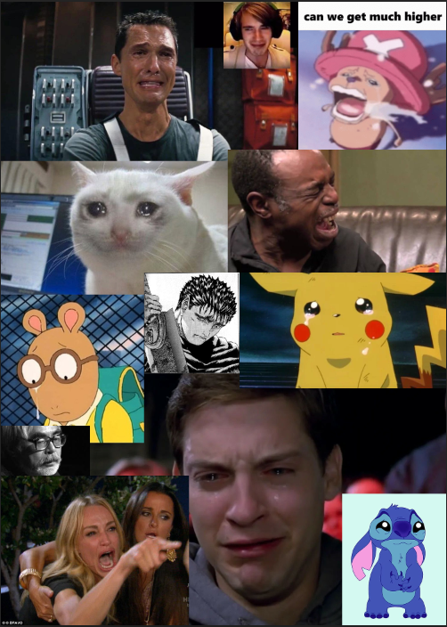

This is a paragraph.
I continued on with the sad face memes that I've seen throughout the years and kept it going. Everyone makes a different type of crying face in different contexts so it makes for an interesting collage. All of these memes have been used so much for text above the crying picture, even putting the crying face over a death of a beloved character which makes for fun and wholesome memes, and along with being remixed considering how there can be the best crying ever.